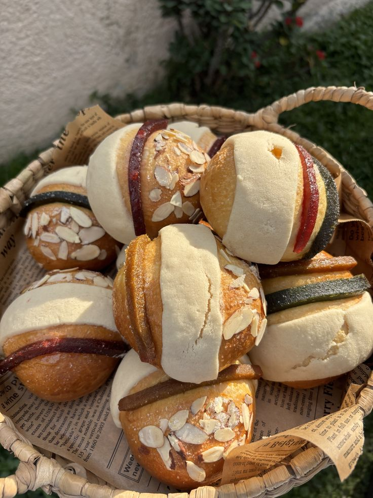

Consejos de Repostería
Para un pan perfecto
Ingredientes y medidas
- Usa siempre la misma taza o báscula para medir
- La harina debe estar nivelada, sin apretar
- Los líquidos tibios, nunca calientes
- La mantequilla a temperatura ambiente, no derretida
- La levadura no debe tocar la sal directamente
Amasado y reposo
- Amasa hasta que la masa se despegue de las manos
- Deja reposar en lugar tibio y sin corrientes
- La masa debe duplicar su tamaño antes de formar
- No la cortes ni la golpees bruscamente
- El segundo reposo es igual de importante que el primero
Horneado
- Precalienta el horno 10 minutos antes
- Si se dora muy rápido, tapa con papel aluminio
- El pan está listo al golpearlo y suena hueco
- Desmolda después de 5 minutos para que no se humedezca
- Deja enfriar sobre una rejilla

Secretos de la casa
- Un poco de leche en la superficie da brillo
- El amor y la paciencia son el ingrediente principal
- Respeta los tiempos: no hay prisa en un buen pan
- Guarda en bolsa de tela o papel, nunca plástico
Inicio
Nuestra historia
Menu
Especialidades